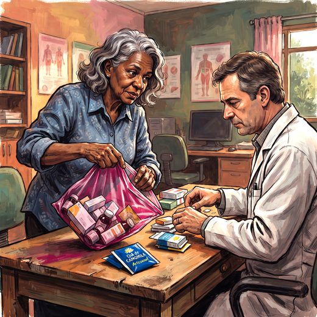

Consulta rápida à beira do leito
Condutas, doses e interações.
Referências da aula · 15
- Gervais F, Vieille C, Reallon E, Morel T, Mouchoux C, Novais T. Assessing incidence of clinically significantly prescribing cascades in older adults: a nationwide retrospective cohort study using the French National Health Data System. Age Ageing. 2026;55(8). PMID 42647768. doi:10.1093/ageing/afag254.PubMedDOI
- Pstrągowski M, Hachlica D, Izbicki Ł. Appropriateness over numbers: pharmacological burden and scalable medication review in older adults. Geriatrics (Basel). 2026;11(4):100. PMID 42645004. doi:10.3390/geriatrics11040100.PubMedDOI
- Falfaly Z, Peterson GM, Bezabhe WM, Salahudeen MS. Concurrent use of anticholinergic and antidementia medicines in older adults with dementia: a systematic review of prevalence, predictors and clinical outcomes. Med Sci (Basel). 2026;14(4):426. PMID 42646560. doi:10.3390/medsci14040426.PubMedDOI
- Rzeczycki P, Pęciak O, Plust M, Droździk M. Molecular aspects of geriatric pharmacotherapy. Cells. 2025;14(17):1363. PMID 40940774. doi:10.3390/cells14171363.PubMedDOI
- World Health Organization. Global Patient Safety Report 2024. Geneva: WHO; 2024.
- 2023 American Geriatrics Society Beers Criteria® Update Expert Panel. American Geriatrics Society 2023 updated AGS Beers Criteria® for potentially inappropriate medication use in older adults. J Am Geriatr Soc. 2023;71(7):2052-81.
- O’Mahony D, Cherubini A, Guiteras AR, et al. STOPP/START criteria for potentially inappropriate prescribing in older people: version 3. Eur Geriatr Med. 2023;14(4):625-32.
- Budnitz DS, Shehab N, Lovegrove MC, Geller AI, Lind JN, Pollock DA. US emergency department visits attributed to medication harms, 2017-2019. JAMA. 2021;326(13):1299-309. PMID 34609453. doi:10.1001/jama.2021.13844.PubMedDOI
- World Health Organization. Global Patient Safety Action Plan 2021–2030. Geneva: WHO; 2021.
- Rochon PA, Gurwitz JH. The prescribing cascade revisited. Lancet. 2017;389(10081):1778-80.
- Masnoon N, Shakib S, Kalisch-Ellett L, Caughey GE. What is polypharmacy? A systematic review of definitions. BMC Geriatr. 2017;17(1):230.
- World Health Organization. Medication Without Harm: WHO Global Patient Safety Challenge. Geneva: WHO; 2017.
- Halter JB, Ouslander JG, Studenski S, High KP, Asthana S, Ritchie CS, Supiano MA, editors. Hazzard's Geriatric Medicine and Gerontology. 8th ed. New York: McGraw-Hill; 2022.
- Freitas EV, Py L, organizadores. Tratado de Geriatria e Gerontologia. 5ª ed. Rio de Janeiro: Guanabara Koogan; 2022.
- Linhares Junior JD. Casos clínicos ilustrativos construídos para as aulas, a partir da prática clínica geriátrica. In: Pós-graduação em Geriatria 2.0. Afya; 2026.
Documentos oficiais
Leis e publicações do Ministério da Saúde sobre o cuidado da pessoa idosa, de acesso livre.
Abrir os documentos